1. Matematický aparát#
1.1. Funkcia#
- Funkcia
Funkcia opisuje vzťah medzi dvoma premennými. Ak hodnote premennej \(x\) priradíme hodnotu premennej \(y\), môžeme tento vzťah zapísať matematickým predpisom
Na Obr. 1.1 je zobrazený priebeh funkcie \(y = f(x) = 50x\). V ľavom paneli a) je premenná \(x\) definovaná (jej definičný obor je) v intervale \(\langle0,5\rangle\) množiny reálnych čísel. Funkcia je v tomto intervale spojitá. Definičný obor funkcie v pravom paneli b) je na množine \({0;0,5;1, \dots 5}\). Funkcia nie je spojitá. Keďže s rastom \(x\), \(y\) rastie, funkcia \(y = f(x) = 50x\) je monotónna.
Premenná \(x\) sa nazýva nezávislá premenná a premenná \(y\) závislá premenná, pretože jej hodnota závisí od hodnoty \(x\).
- Monotónna funkcia
Funkcia je monotónna, ak sa jej hodnoty pri raste premennej \(x\) pohybujú stále rovnakým smerom.
Ak s rastom \(x\) funkčná hodnota \(y=f(x)\) rastie alebo zostáva nezmenená, funkcia \(f(x)\) je monotónne rastúca.
Ak s rastom \(x\) funkčná hodnota \(z=g(x)\) klesá alebo zostáva nezmenená, funkcia \(g(x)\) je monotónne klesajúca.
Zjednodušene povedané, monotónna funkcia počas sledovaného intervalu „nemení smer”: buď rastie, alebo klesá.
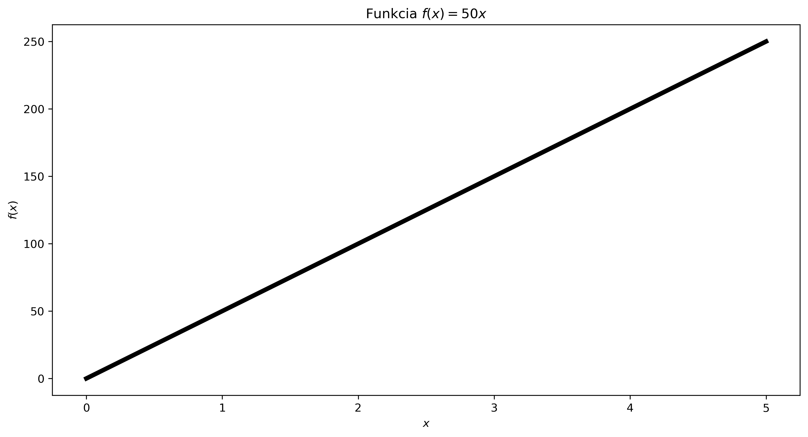
Obr. 1.1 Lineárna rastúca funkcia#
Funkcia \(y=f(x)=50x\) je lineárna funkcia. Graf lineárnej funkcie tvorí priamka. V našom prípade zobrazujeme iba časť definičného oboru, preto sa v grafe objaví úsečka (Obr. 1.1).
- Konvexná a konkávna funkcia
Uvažujme funkcie \(f(x)\) a \(g(x)\).
Ak sa pri rovnakom prírastku premennej \(x\) funkčné prírastky
kde \(h>0\), s rastom \(x\) zväčšujú alebo zostávajú nezmenené, funkcia \(f(x)\) je konvexná.
Ak sa pri rovnakom prírastku premennej \(x\) funkčné prírastky
s rastom \(x\) zmenšujú alebo zostávajú nezmenené, funkcia \(g(x)\) je konkávna.
Pri konvexnej funkcii sa sklon grafu s rastom \(x\) zväčšuje alebo zostáva nezmenený.
Pri konkávnej funkcii sa sklon grafu s rastom \(x\) zmenšuje alebo zostáva nezmenený.
Na Obr. 1.2 je zobrazený priebeh funkcie \(g(x)=25-x^2\) (ľavý panel obrázka). V definičnom obore \(x\ge 0\) je funkcia klesajúca.
Pravý panel zobrazuje zmeny funkčnej hodnoty pri zvýšení premennej \(x\) vždy o jednu jednotku (\(h=1\)). Vidíme, že absolútna veľkosť týchto zmien sa s rastom \(x\) zväčšuje. Funkčné prírastky preto klesajú, a funkcia je konkávna.
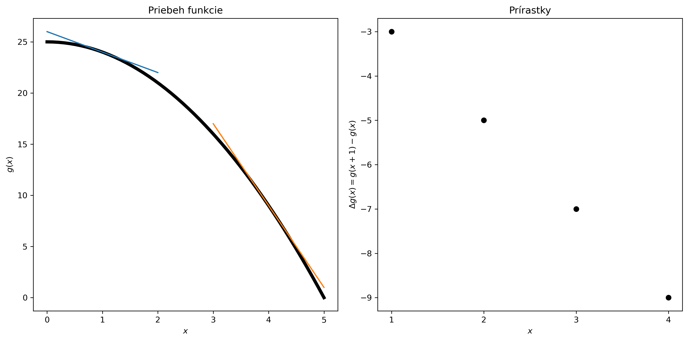
Obr. 1.2 Konkávna klesajúca funkcia#
Na obr. Obr. 1.3 je priebeh konvexnej funkcie.
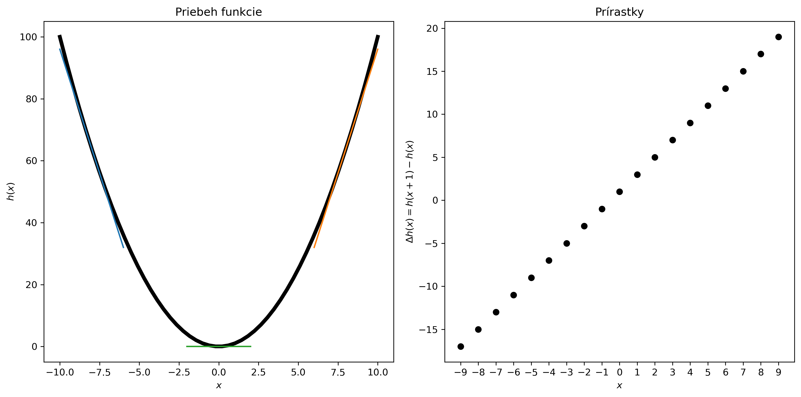
Obr. 1.3 Konvexná funkcia#
Priebeh funkcie na Obr. 1.3 nie je v celom definičnom obore monotónny. Funkcia klesá pre \(x \le 0\) a rastie pre \(x \ge 0\).
Funkčné prírastky zodpovedajúce jednotkovému zvýšeniu premennej \(x\) rastú v celom definičnom obore. Preto ide o konvexnú funkciu.
V ekonómii býva jedna premenná často ovplyvnená viacerými faktormi. Označme tieto faktory \(x_1,x_2,\dots,x_n\).
Vzťah medzi premennou \(y\) a týmito faktormi možno zapísať funkciou viacerých premenných:
Vysvetľujúce premenné \(x_1,x_2,\dots,x_n\) možno zapísať aj pomocou vektora
Potom možno funkciu zapísať kompaktnejšie v tvare:
1.2. Multiplikátor#
- Multiplikátor
Multiplikátor \(i\)-tej premennej vyjadruje, o koľko jednotiek sa zmení hodnota premennej \(y\), ak sa hodnota premennej \(x_i\) zvýši o jednu jednotku, za predpokladu Ceteris paribus. Multiplikátor je pomer zmeny premennej \(y\) k zmene premennej \(x_i\):
Multiplikátor možno chápať ako všeobecné označenie citlivosti jednej premennej na zmenu druhej.
- Ceteris paribus
Za nezmenených ostatných okolností (premenných). Multiplikátor meria vplyv zmeny \(x_i\) na \(y\), za predpokladu, že hodnoty ostatných premenných \(x_j, j\ne i\) sa nemenia. Aj zápis (1.3) predpokladá, že z vysvetľujúcich premenných sa zmení iba \(x_i\) o \(\Delta{x_i}\).
Pre zjednodušenie budeme ďalej uvažovať vzťah medzi jednou vysvetľujúcou premennou \(x\) a vysvetľovanou premennou \(y\). Predpoklad ceteris paribus znamená, že všetky ostatné premenné ostávajú nezmenené. Jednoduchý zápis multiplikátora je potom v tvare:
Kde využijeme multiplikátor?
Koncept multiplikátora budeme používať v celej učebnici. V rôznych ekonomických súvislostiach bude multiplikátor predstavovať napríklad:
Hraničný produkt vstupu, ako napríklad
hraničný výnos investície,
hraničný sklon k úsporám,
fiškálny multiplikátor HDP.
Vo všetkých týchto prípadoch ide o rovnakú myšlienku: multiplikátor vyjadruje, o koľko sa zmení sledovaná ekonomická veličina pri jednotkovej zmene inej veličiny, ceteris paribus.
Terminológia
Mnohé ekonomické veličiny možno interpretovať ako multiplikátory alebo elasticity.
Prvý výraz v názve zvyčajne označuje veličinu, ktorá sa mení. Druhý výraz označuje faktor, ktorý zmenu vyvoláva.
Napríklad:
hraničný produkt práce je pracovný multiplikátor výstupu,
hraničný sklon k spotrebe je spotrebný multiplikátor príjmu.
Táto logika vytvárania názvov bude používaná v celej učebnici.
1.2.1. Derivácia funkcie#
Poznámka
V ekonómii sa stretávame s premennými, ktoré môžu nadobúdať iba niektoré hodnoty, napríklad počet zamestnancov alebo počet kusov výrobkov. Takéto premenné označujeme ako diskrétne.
Iné premenné môžu nadobúdať ľubovoľné hodnoty z určitého intervalu. Príkladom môže byť hmotnosť, dĺžka (dĺžka plota v metroch) alebo čas. Takéto premenné označujeme ako spojité.
Rozdiel medzi diskrétnymi a spojitými premennými bude dôležitý pri zavedení derivácie a spojitého multiplikátora.
Diskrétney multiplikátor (1.4) meria zmenu premennej \(y\) pri konečnej zmene premennej \(x\).
V mnohých ekonomických úlohách nás však zaujíma zmena premennej \(y\) pri veľmi malej zmene premennej \(x\). Takéto meranie nazývame spojitý multiplikátor.
- Spojitý multiplikátor
Spojitý multiplikátor vyjadruje zmenu premennej \(y\) pri nekonečne malej zmene premennej \(x\) (\(\Delta x \to 0\)).
Výraz na pravej strane nazývame derivácia funkcie \(y=f(x)\) podľa premennej \(x\) a označujeme
Spojitý multiplikátor je preto totožný s deriváciou funkcie. Udáva približnú zmenu premennej \(y\) vyvolanú jednotkovou zmenou premennej \(x\).
Ak môžeme vyjadriť deriváciu \(f'(x)\), hovoríme, že funkcia \(f(x)\) je diferencovateľná.
Funkcia \(f(x)\) je funkcia jedinej premennej; (1.6) je ordinárna derivácia funkcie \(f(x)\).
Ak predpokladáme diferencovateľnú funkciu viacerých premenných \(f(x_1,x_2, \dots x_n )\), vplyv veľmi malej zmeny \(x_i\) na \(y\), Ceteris paribus možno vyjadriť parciálnou deriváciou
Geometrická interpretácia prvej derivácie je znázornená na Obr. 1.4.
Pre lineárnu funkciu
je prvá derivácia konštantná:
Hodnota derivácie udáva sklon grafu funkcie. Pri lineárnej funkcii sa derivácia rovná tangensu uhla \(\alpha\), ktorý graf funkcie zviera s kladným smerom osi \(x\):
Čím väčšia je hodnota derivácie, tým strmší je priebeh funkcie. Kladná derivácia zodpovedá rastúcej funkcii, záporná derivácia klesajúcej funkcii. Ak je derivácia nulová, funkcia je vodorovná.
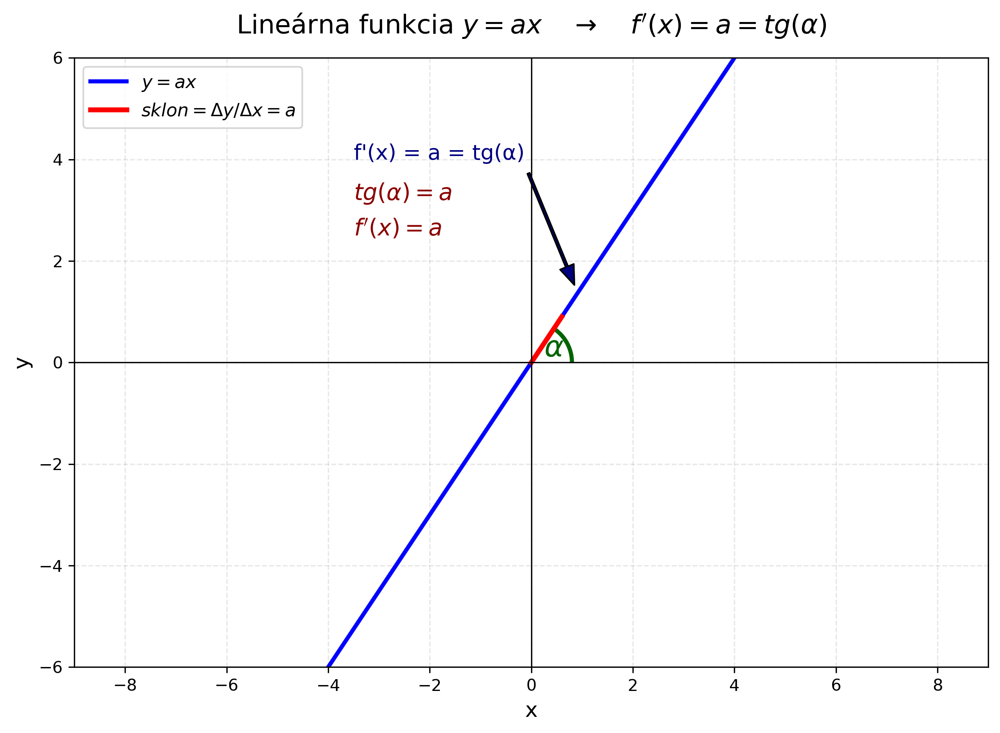
Obr. 1.4 Geometrická interpretácia prvej derivácie#
Na Obr. 1.4 je zobrazený priebeh nelineárnej, diferencovateľnej, konkávnej a rastúcej funkcie. Prvá derivácia funkcie v dvoch rôznych bodoch je znázornená dotyčnicami ku grafu funkcie.
Sklon modrej dotyčnice je väčší ako sklon červenej. To znamená, že multiplikátor funkcie je pri nižšej hodnote \(x=2\) vyšší než pri vyššej hodnotách \(x=6\).
Keďže hodnota prvej derivácie závisí od \(x\), nejde o lineárnu funkciu. Podrobnejšie pozri Príklad: Vlastnosti funkcií podľa ich prvých derivácií.
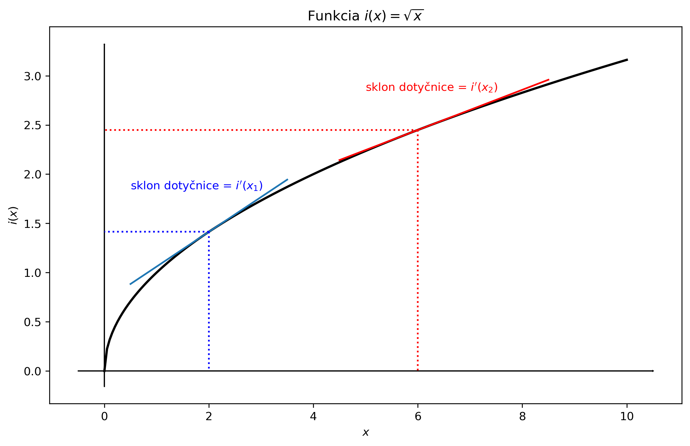
Obr. 1.5 Konkávna rastúca funkcia#
Prvú deriváciu interpretujeme ako multiplikátor. Pri diferencovateľnej konkávnej funkcii sa s rastom \(x\) hodnota multiplikátora znižuje. Preto sa so zvyšovaním \(x\) znižuje aj hodnota prvej derivácie \(f'(x)\). Pozri Obr. 1.6.
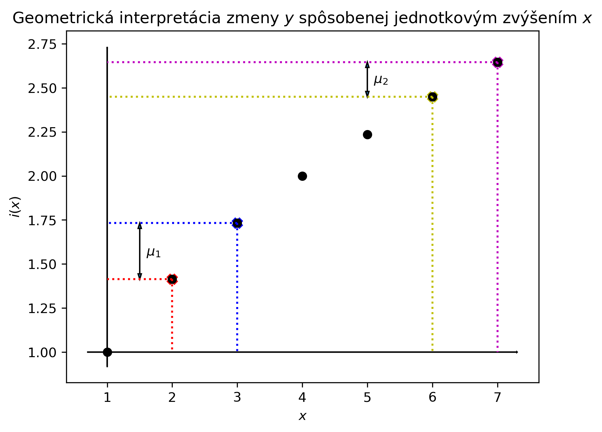
Obr. 1.6 Multiplikátory v konkávnej rastúcej funkcii#
Všimnite si
Na Obr. 1.2 a Obr. 1.3 sú prvé derivácie interpretované ako sklony dotyčníc ku grafu funkcie.
Platí:
Vlastnosť derivácie |
Interpretácia |
|---|---|
Ak \(f'(x)\ge0\) |
funkcia \(f(x)\) je v okolí bodu \(x\) rastúca |
Ak \(f'(x)\le0\) |
funkcia \(f(x)\) je v okolí bodu \(x\) klesajúca |
Ak \(f'(x)=0\) |
bod \(x\) je stacionárny |
- Stacionárny bod
Bod \([x_s,f(x_s)]\) nazývame stacionárny, ak
Nie každý stacionárny bod je extrém ({ref}’volny_extrem’ vysvetlíme neskôr v texte). Stacionárny bod môže byť aj Inflexný bod.
Na Obr. 1.3 je stacionárnym bodom bod \([0,0]\). Dotyčnica ku grafu funkcie je v tomto bode vodorovná. Funkcia \(h(x)\) je klesajúca pre \(x\le0\) a rastúca pre \(x\ge0\). Pozri tiež Príklad: Vlastnosti funkcií podľa ich prvých derivácií.
Na Obr. 1.7 je zobrazený priebeh funkcie \(j(x)\). Funkcia je klesajúca na intervale \((-\infty,0\rangle\), rastúca na intervale \(\langle0,\frac{40}{3}\rangle\) a klesajúca na intervale \(\langle\frac{40}{3},\infty)\). Pozri tiež Príklad: Vlastnosti funkcií podľa ich prvých derivácií.
Funkcia \(j(x)\) má dva stacionárne body:
a
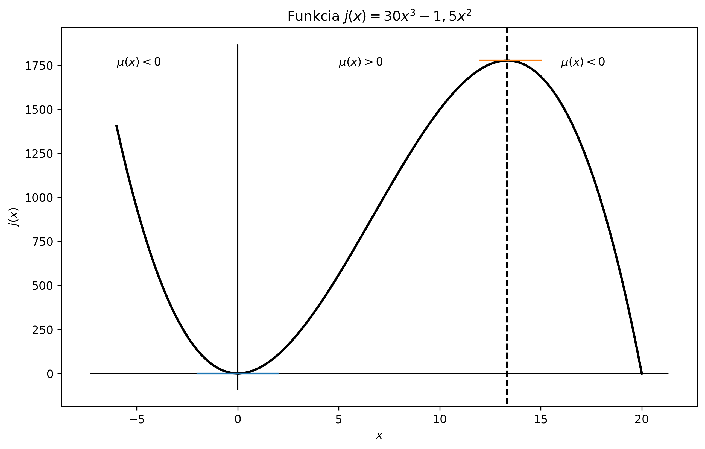
Obr. 1.7 Priebeh nemonotónnej funkcie#
1.3. Elasticita#
Poznámka
Multiplikátor dáva do podielu zmeny premenných \(x,y\) vyjadrených v absolútnych jednotkách. To je o koľko eur sa zvýšia náklady, ak sa dĺžka plota zvýši o meter, ceteris paribus.
Ekonómov často zaujímajú relatívne zmeny: vplyv percentuálnej zmeny jednej veličiny na inú.
- Absolútna zmena
rozdiel pred a po zmene \(\Delta x = x' - x\), uvádza sa v jednotkách premennej \(x\).
- Relatívna zmena
pomer absolútnej zmeny k pôvodnej veľkosti danej premennej, \(\frac{\Delta x}{x} = \frac{x' - x}{x}\). Vynásobením 100 to je percentálna zmena premennej \(x\).
Multiplikátor získame podielom absolútnych zmien dvoch premenných (1.4).
Elasticitu získame podielom relatívnych zmien dvoch premenných.
Elasticita vyjadruje, o koľko percent sa zmení premenná \(y\), ak sa premenná \(x\) zmení o jedno percento, Ceteris paribus.
(1.8) je diskrétny zápis elasticity. Spjitý zápis je
Elasticita vyjadruje, o koľko percent sa zmení funkčná hodnota pri jednopercentnej zmene premennej.
Elasticita nemá jednotku merania, pretože je podielom dvoch relatívnych zmien. Je teda bezrozmerná, čo umožňuje porovnávať citlivosť medzi rôznymi ekonomickými veličinami.
Napríklad elasticita dopytu podľa ceny môže byť porovnávaná s elasticitou produkcie podľa práce, hoci ide o veličiny merané v rôznych jednotkách.
Ak vo funkcii \(f(x)\) platí:
\(|\varepsilon|>1\), vzťah opísaný funkciou je elastický,
\(|\varepsilon|<1\), vzťah opísaný funkciou je neelastický,
\(|\varepsilon|=1\), vzťah opísaný funkciou je jednotkovo elastický.
- Elastický vzťah
Zvýšenie premennej \(x\) o 1 %, ceteris paribus, spôsobí zmenu premennej \(y\) o viac ako 1 %.
- Neelastický vzťah
Zvýšenie premennej \(x\) o 1 %, ceteris paribus, spôsobí zmenu premennej \(y\) o menej ako 1 %.
- Jednotkovo elastický vzťah
Zvýšenie premennej \(x\) o 1 %, ceteris paribus, spôsobí zmenu premennej \(y\) presne o 1 %.
Na Obr. 1.8 sú zobrazené priebehy funkcií s rôznymi hodnotami elasticity. Jednotlivé panely zobrazujú:
a) kladný elastický vzťah,
b) kladný jednotkovo elastický vzťah,
c) kladný neelastický vzťah,
d) záporný elastický vzťah,
e) záporný jednotkovo elastický vzťah,
f) záporný neelastický vzťah.
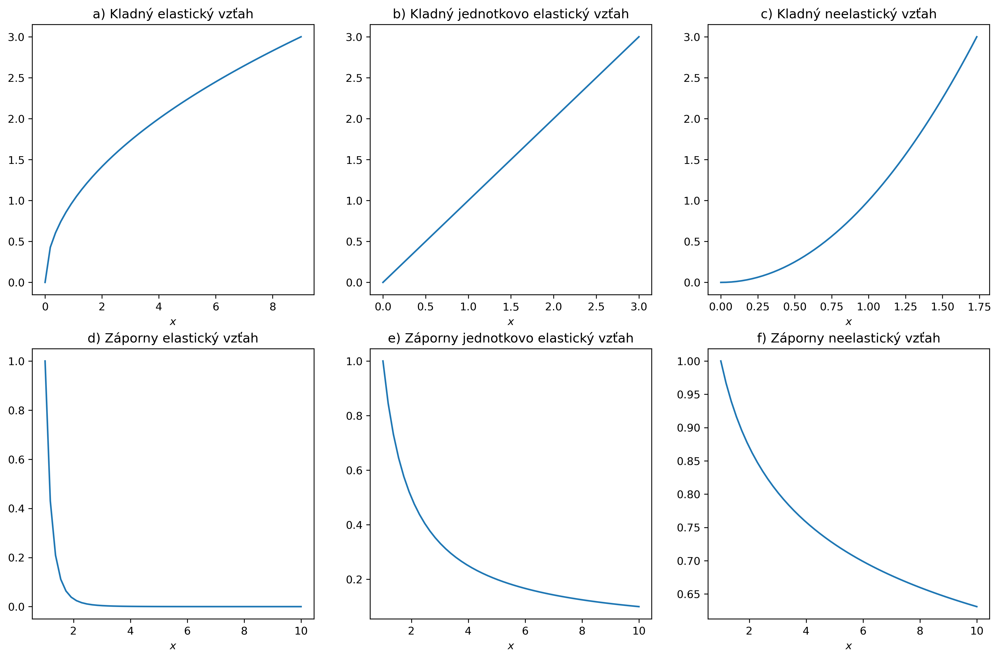
Obr. 1.8 Priebeh funkcie podľa elasticity#
Veličina |
Definícia |
Interpretácia |
|---|---|---|
Multiplikátor \(\mu\) |
\(\mu=\frac{\Delta y}{\Delta x}\) |
O koľko jednotiek sa zmení \(y\), ak sa \(x\) zvýši o jednotku. |
Spojitý multiplikátor \(\mu\) |
\(\mu=\frac{dy}{dx}\) |
Približná zmena \(y\) pri jednotkovej zmene \(x\). |
Elasticita \(\varepsilon\) |
\(\varepsilon=\frac{\Delta y/y}{\Delta x/x}\) |
O koľko percent sa zmení \(y\), ak sa \(x\) zmení o 1 %. |
Spojitá elasticita \(\varepsilon\) |
\(\varepsilon=\frac{dy}{dx}\frac{x}{y}\) |
Približná percentuálna zmena \(y\) pri 1 % zmene \(x\). |
Kde využijeme elasticitu?
Elasticita patrí medzi najpoužívanejšie nástroje ekonomickej analýzy. V ďalších kapitolách sa stretneme najmä s:
cenovou elasticitou dopytu, (6.3),
cenovou elasticitou ponuky,
príjmovou elasticitou dopytu, (6.2),
krížovou elasticitou dopytu,
elasticitou substitúcie výrobných faktorov.
Vo všetkých prípadoch elasticita vyjadruje citlivosť jednej ekonomickej veličiny na percentuálnu zmenu inej veličiny. Umožňuje porovnávať vzťahy medzi premennými, ktoré sú merané v rozdielnych jednotkách.
Terminológia
Názvoslovie elasticít sa vytvára podobne ako názvoslovie multiplikátorov. Napríklad cenová elasticita dopytu vyjadruje citlivosť dopytu na zmenu ceny, príjmová elasticita dopytu citlivosť dopytu na zmenu príjmu a krížová elasticita dopytu citlivosť dopytu na zmenu ceny iného statku.
Takéto pomenovania umožňujú z názvu veličiny okamžite určiť, aký ekonomický vzťah meria.
1.4. Funkčný tvar a interpretácia parametrov#
Pri lineárnej funkcii
je parameter \(\beta\) multiplikátorom. Vyjadruje, o koľko jednotiek sa zmení \(y\), ak sa \(x\) zvýši o jednotku.
Platí
Pri logaritmickej špecifikácii
je parameter \(\varepsilon\) elasticitou.
Platí
Preto sa v ekonomických modeloch často používajú lineárne špecifikácie, ak chceme priamo odhadovať multiplikátory, a logaritmické špecifikácie, ak chceme priamo odhadovať elasticity.
1.5. Konvexnosť a konkávnosť#
Pri konkávnej funkcii sa funkčné prírastky s rastom premennej \(x\) zmenšujú. Pri konvexnej funkcii sa funkčné prírastky s rastom \(x\) zväčšujú.
Ak je funkcia diferencovateľná, funkčné prírastky možno interpretovať pomocou prvej derivácie. Pri konkávnej funkcii sa preto s rastom \(x\) zmenšuje hodnota prvej derivácie \(f'(x)\). Pri konvexnej funkcii sa hodnota prvej derivácie \(f'(x)\) zväčšuje.
Ak môžeme derivovať aj prvú deriváciu funkcie, získame druhú deriváciu
Druhá derivácia vyjadruje zmenu prvej derivácie, teda zmenu multiplikátora.
- Dvakrát diferencovateľná funkcia
Funkciu \(f(x)\) nazývame dvakrát diferencovateľnou, ak môžeme vyjadriť jej prvú aj druhú deriváciu.
Pri dvakrát diferencovateľnej funkcii možno konvexnosť a konkávnosť určiť pomocou druhej derivácie.
- Konkávna funkcia
Diferencovateľná funkcia je konkávna, ak sa jej prvá derivácia s rastom \(x\) zmenšuje.
- Konvexná funkcia
Diferencovateľná funkcia je konvexná, ak sa jej prvá derivácia s rastom \(x\) zväčšuje.
Platí:
Vlastnosť druhej derivácie |
Interpretácia |
|---|---|
Ak \(f''(x)\ge0\) |
funkcia \(f(x)\) je v okolí bodu \(x\) konvexná |
Ak \(f''(x)\le0\) |
funkcia \(f(x)\) je v okolí bodu \(x\) konkávna |
Ak \(f''(x)=0\) |
bod \(x\) je inflexný bod |
- Inflexný bod
Bod \([x_i,f(x_i)]\) nazývame inflexný, ak
V inflexnom bode sa mení zakrivenie funkcie. Funkcia prechádza z konvexnej na konkávnu alebo z konkávnej na konvexnú.
Príklad: Vlastnosti funkcií podľa ich druhých derivácií hľadá priebeh funkcií na Obr. 1.1, Obr. 1.2, Obr. 1.3, Obr. 1.5 a Obr. 1.7.
Obr. 1.9 zobrazuje inflexný bod vo funkcii \(j(x) = 30x^2 - 1,5x^3\).
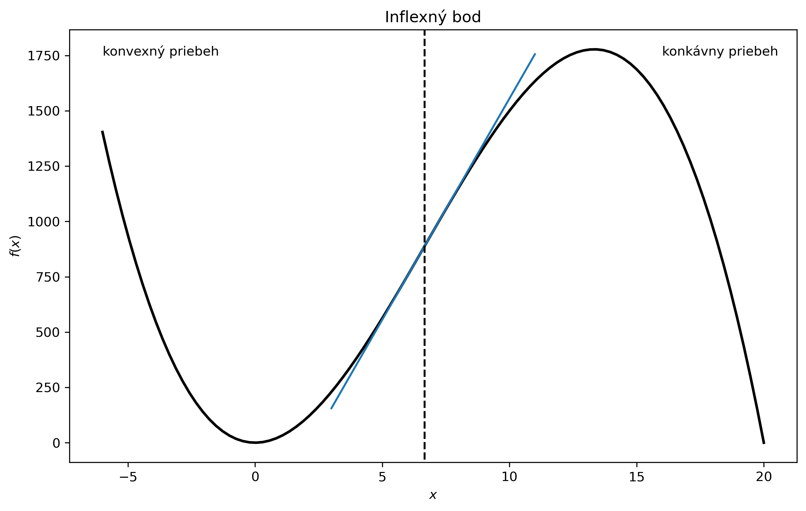
Obr. 1.9 Inflexný bod#
Kde to využijeme?
Mnohé ekonomické vzťahy možno opísať pomocou konvexných alebo konkávnych funkcií.
Napríklad:
Rastom vstupu sa zvyšuje objem výroby. Výrobné prírastky sú však často klesajúce. Produkčná funkcia sa preto často formuluje ako rastúca a konkávna.
Rastom spotreby statku sa zvyšuje blahobyt spotrebiteľa. Dodatočný prínos ďalšej jednotky spotreby sa však zvyčajne znižuje. Funkcia užitočnosti je preto spravidla rastúca a konkávna.
Rast kapitálových vstupov zvyčajne zvyšuje produkciu, ale každá ďalšia jednotka kapitálu prináša menší dodatočný prírastok produkcie. Aj tento vzťah býva často konkávny.
Náklady na výrobu môžu pri vysokom objeme produkcie rásť čoraz rýchlejšie. Funkcia nákladov je v takom prípade konvexná.
Konvexnosť a konkávnosť patria medzi najdôležitejšie vlastnosti ekonomických modelov. Umožňujú analyzovať správanie spotrebiteľov, firiem a celej ekonomiky.
1.6. Lokálne minimum a maximum#
- Lokálne minimum
Bod \([x_m,f(x_m)]\) je lokálnym minimom funkcie \(f(x)\), ak v dostatočne malom okolí bodu \(x_m\) nadobúda funkcia najnižšiu hodnotu.
- Lokálne maximum
Bod \([x_M,f(x_M)]\) je lokálnym maximom funkcie \(f(x)\), ak v dostatočne malom okolí bodu \(x_M\) nadobúda funkcia najvyššiu hodnotu.
Lokálne minimum alebo maximum sa často nachádza v stacionárnom bode (pozri Obr. 1.3, Obr. 1.7 a Príklad: Vlastnosti funkcií podľa ich druhých derivácií), teda v bode, kde
Na {numref}’parabola’ je stacionárny bod [0,0] lokálne minimum. Na
1.7. Úloha na voľný extrém#
Pri ekonomickej analýze často hľadáme hodnotu premennej, pri ktorej funkcia dosahuje najvyššiu alebo najnižšiu hodnotu. Takýto problém nazývame problém optimalizácie.
Ak nehľadáme optimum pri žiadnej dodatočnej podmienke, hovoríme o úlohe na voľný extrém.
- Voľný extrém
Voľným extrémom nazývame maximum alebo minimum funkcie, ktoré hľadáme bez dodatočných obmedzení.
Voľný extrém funkcie \(f(x)\) zapisujeme napríklad v tvare
alebo
Na Obr. 1.3 je stacionárny bod \([0,0]\) lokálne minimum funkcie
a zároveň rieši minimalizačnú úlohu (1.12).
- Globálne maximum
Bod, ktorý rieši (1.11) nazývame globálne maximum.
- Globálne minimum
Bod, ktorý rieši (1.12) nazývame globálne minimum.
Bod \([0,0]\) je globálne minimum funkcie \(f(x) = x^2\).
Na Obr. 1.7 lokálne minimum \([0,0]\) nerieši úlohu (1.12) a nie je globálne minimum. Pri extrémne nízkych hodnotách \(x\) je funkčná hodnota \(f(x)\) extrémne nižšia. Nižšia ako \(f(0) = 0\).
Analogicky platí
preto lokálne maximum \([40/3,16000/9]\) nerieši úlohu (1.11).
Úlohy (1.12) a (1.11) riešime v dvoch krokoch:
nájdime stacionárne body,
zistime, či stacionárne body sú globálne maximum alebo minimum.
V druhom kroku potrebujeme odlíšiť lokálne minimá od maxím. Následne preveríme, či lokálne extrémy sú hľadané globálne extrémy.
Predpokladajme, že funkcia \(f(x)\) je dvakrát diferencovateľná. V prvom kroku získame stacionárne body riešním rovnice:
Rovnicu (1.13) nazývame podmienka prvého rádu alebo aj nutná podmienka. Z podmienky prvého rádu poznáme stacionárne body funkcie \(f(x)\).
Zatiaľ nevieme, či stacionárne body sú lokálne minimá alebo maximá a či sú medzi nimi globálne extrémy. V druhom kroku odlíšime lokálne maximá a minimá a nájdeme z ních globálne extrémy.
Na rozlíšenie minima a maxima využijeme druhú deriváciu.
Bod \(x_s\) je lokálnym minimom, ak je funkcia \(f(x)\) v jeho okolí konvexná. Bod \(x_s\) je lokálnym maximom, ak je funkcia \(f(x)\) v jeho okolí konkávna. Druhú deriváciu preto nazývame aj podmienka druhého rádu. Platí:
Vlastnosť druhej derivácie |
Interpretácia |
|---|---|
Ak \(f'(x_s)=0\) a \(f''(x_s)>0\) |
bod \(x_s\) je lokálnym minimom |
Ak \(f'(x_s)=0\) a \(f''(x_s)<0\) |
bod \(x_s\) je lokálnym maximom |
Ak \(f'(x_s)=0\) a \(f''(x_s)=0\) |
druhá derivácia nerozhodne |
Globálny extrém je bod, v ktorom funkcia dosahuje najvyššiu alebo najnižšiu hodnotu v celom definičnom obore. Pri hľadaní globálneho extrému preto porovnávame hodnoty funkcie v lokálnych extrémoch a správanie funkcie na hraniciach definičného oboru.
Pre bližšie podrobnosti pozri Príklad: Úloha na voľný extrém kvadratickej funkcie. a Príklad: Úloha na voľný extrém kubickej funkcie..
Kde to využijeme?
Voľný extrém budeme používať pri analýze rozhodovania ekonomických subjektov.
Napríklad:
spotrebiteľ maximalizuje užitočnosť,
domácnosť maximalizuje celoživotný blahobyt,
investor maximalizuje výnos investície,
firma minimalizuje náklady.
Vo všetkých prípadoch hľadáme hodnotu premennej, pri ktorej sledovaná funkcia dosahuje maximum alebo minimum.
1.8. Úloha na viazaný extrém#
V mnohých ekonomických úlohách rozhodujeme súčasne o viacerých premenných. Napríklad firma rozhoduje o množstve práce a kapitálu, spotrebiteľ o spotrebe viacerých statkov alebo investor o rozdelení majetku medzi rôzne aktíva.
Často pritom nehľadáme maximum alebo minimum bez obmedzení, ale len medzi prípustnými riešeniami. Takýto problém nazývame úloha na viazaný extrém.
- Viazaný extrém
Maximum alebo minimum funkcie hľadané pri splnení aspoň jednej dodatočnej podmienky.
Úlohu na viazaný extrém s dvoma rozhodovacími premennými zapisujeme v tvare
pri podmienke
Funkciu \(f(x_1,x_2)\) nazývame účelová funkcia. Vyjadruje cieľ ekonomického subjektu, napríklad maximalizáciu zisku firmy alebo užitočnosti spotrebiteľa.
Podmienku (1.15) nazývame ohraničenie. Ohraničenie vyjadruje, ktoré kombinácie premenných \(x_1\) a \(x_2\) sú prípustné.
Príklad
Spotrebiteľ maximalizuje užitočnosť
pri rozpočtovom ohraničení
Firma maximalizuje zisk
pri obmedzenom množstve dostupných výrobných faktorov.
Na rozdiel od úlohy na voľný extrém nehľadáme optimum v celom rozhodovacom priestore. Riešením môže byť iba bod, ktorý spĺňa podmienku (1.15).
Pri analýze úloh na viazaný extrém využijeme vrstevnice funkcie.
1.8.1. Vrstevnice funkcie#
Úlohu na viazaný extrém budeme riešiť v rozhodovacom priestore premenných \(x_1\) a \(x_2\).
- Vrstevnica funkcie
Množina bodov \([x_1,x_2]\), v ktorých funkcia nadobúda rovnakú hodnotu
V ekonómii sú špeciálnymi prípadmi vrstevníc napríklad indiferenčné krivky alebo izokvanty.
Na obrázku Obr. 1.10 sú zobrazené vrstevnice lineárnej funkcie. Všetky body na jednej vrstevnici dávajú rovnakú hodnotu funkcie.
Na obrázku Obr. 1.11 sú zobrazené vrstevnice dvoch nelineárnych funkcií. Na rozdiel od lineárneho prípadu majú vrstevnice meniaci sa sklon.
Na obrázku Obr. 1.12 je zobrazená mapa vrstevníc funkcie. Každá vrstevnica predstavuje inú hodnotu funkcie.
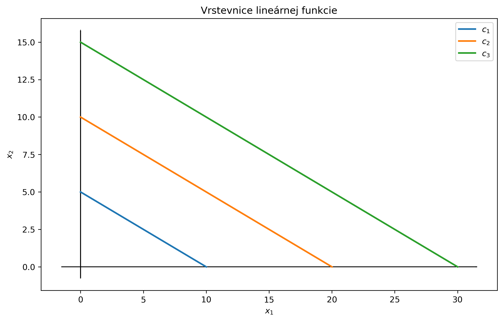
Obr. 1.10 Vrstevnice funkcie \(f(x_1,x_2) = 0,5x_1 + x_2\)#
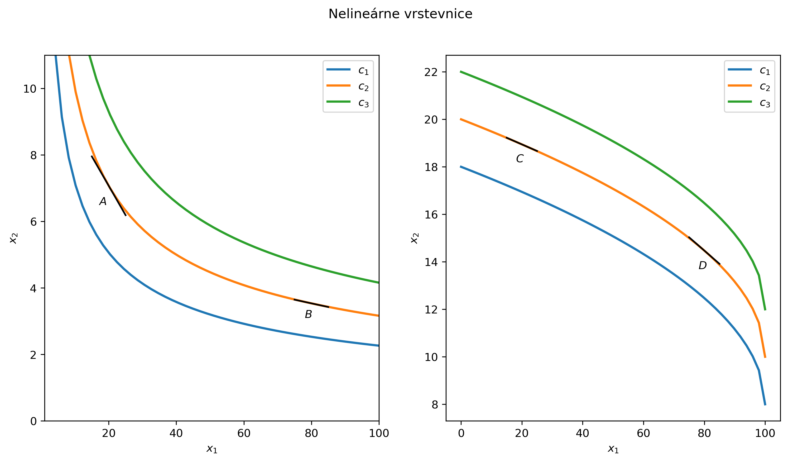
Obr. 1.11 Vrstevnice nelineárnych funkcií#
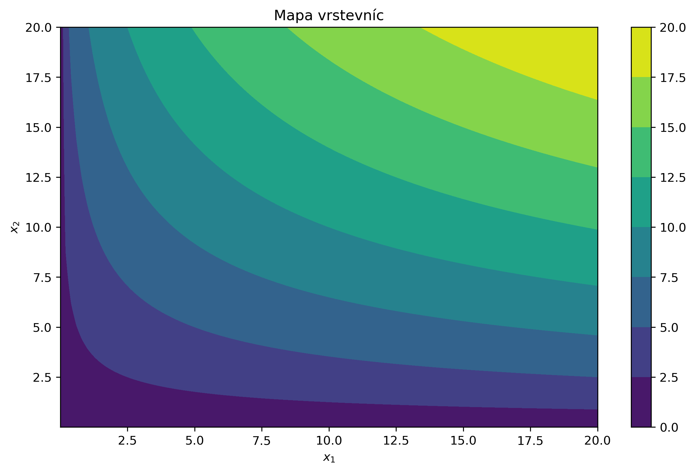
Obr. 1.12 Mapa vrstevníc#
1.8.2. Sklon vrstevnice#
Pre každú hodnotu
existuje vrstevnica funkcie. Ak môže \(c\) nadobúdať ľubovoľné reálne hodnoty, funkcia má nekonečne veľa vrstevníc. Na obrázkoch Obr. 1.10 a Obr. 1.11 sú zobrazené iba vybrané hodnoty parametra \(c\). Predstavu o celej sústave vrstevníc poskytuje Obr. 1.12.
Vrstevnice tej istej funkcie sa navzájom nepretínajú. Ak by sa pretínali, funkcia by v jednom bode nadobúdala dve rôzne hodnoty, čo nie je možné.
Ak sa súčasne menia premenné \(x_1\) a \(x_2\), mení sa aj hodnota funkcie \(f(x_1,x_2)\).
Pre malú zmenu premenných platí
Prvý člen vyjadruje vplyv malej zmeny premennej \(x_1\) na funkčnú hodnotu. Druhý člen vyjadruje vplyv malej zmeny premennej \(x_2\). Ich súčet udáva celkovú zmenu funkcie.
Na vrstevnici sa hodnota funkcie nemení. Preto platí
Po dosadení do predchádzajúceho vzťahu dostaneme
Po úprave:
Sklon vrstevnice preto určuje pomer parciálnych derivácií funkcie.
Záporná hodnota
vyjadruje, o koľko sa musí zmeniť premenná \(x_2\), aby kompenzovala jednotkovú zmenu premennej \(x_1\) a hodnota funkcie sa nezmenila.
Inými slovami, ide o mieru substitúcie medzi premennými \(x_1\) a \(x_2\) pri nezmenenej hodnote funkcie.
Na obrázku Obr. 1.11 sú sklony vrstevníc znázornené dotyčnicami v bodoch A, B, C a D.
- Hraničná miera substitúcie
Záporný sklon vrstevnice funkcie.
Platí
Hraničná miera substitúcie vyjadruje, o koľko sa musí zmeniť premenná \(x_2\), aby kompenzovala jednotkovú zmenu premennej \(x_1\) a hodnota funkcie zostala nezmenená.
Hraničnú mieru substitúcie možno získať dvoma spôsobmi:
ako zápornú hodnotu sklonu vrstevnice,
ako pomer parciálnych derivácií funkcie.
Oba prístupy vedú k rovnakému výsledku.
Technická poznámka
Zo vzťahu
a úplného diferenciálu
pri
vyplýva
Hraničnú mieru substitúcie preto možno interpretovať ako zápornú hodnotu sklonu vrstevnice alebo ako pomer parciálnych derivácií funkcie.
Pre detailnejšie pochopenie vrestevníc a hraničnej miery substitúcie pozri Section 1.12.5.
1.8.3. Množina prípustných riešení#
Ohraničenie (1.15) rozdeľuje rozhodovací priestor na prípustné a neprípustné riešenia.
- Prípustné riešenie
Bod \([x_1,x_2]\), ktorý vyhovuje nerovnici (1.15).
- Množina prípustných riešení
Množina bodov \([x_1,x_2]\), ktoré vyhovujú nerovnici (1.15).
- Hranica prípustných riešení
Množina bodov \([x_1,x_2]\), pre ktoré platí:
Body, pre ktoré
nie sú prípustné.
Na Obr. 1.13 je množina prípustných riešení zobrazená zelenou plochou. V tomto prípade sú vrstevnice funkcie \(g(x_1,x_2)\) konkávne, hoci vo všeobecnosti nemusia byť konkávne. Čierna krivka zobrazuje hranicu prípustných riešení.
Červený bod \([x_1^r,x_2^r]\) a modrý bod \([x_1^b,x_2^b]\) sú prípustnými riešeniami. Modrý bod navyše leží na hranici prípustných riešení.
Žltý bod \([x_1^y,x_2^y]\) nie je prípustným riešením, pretože nevyhovuje ohraničeniu (1.15).
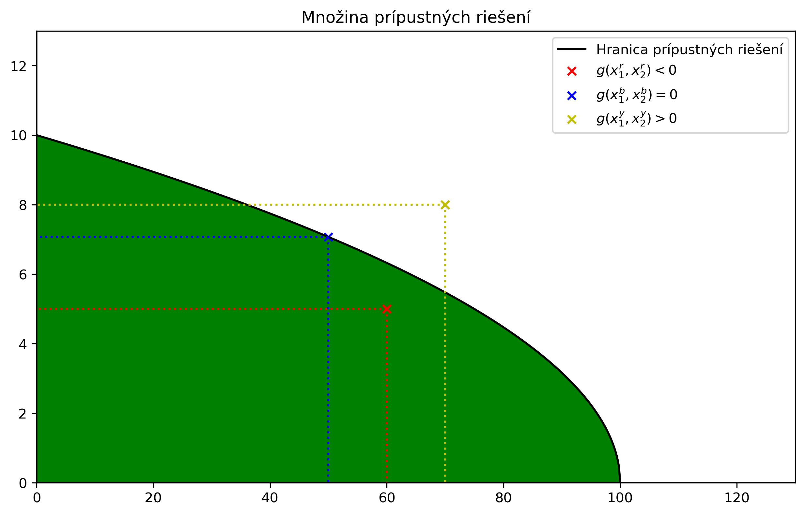
Obr. 1.13 Množina prípustných riešení#
1.8.4. Grafické riešenie úlohy na viazaný extrém#
Uvažujme úlohu
pri ohraničení
Na Obr. 1.14 je zobrazená hranica prípustných riešení, množina prípustných riešení a niekoľko vrstevníc účelovej funkcie.
Vrstevnice \(f_1\) a \(f_{max}\) prechádzajú množinou prípustných riešení. Vrstevnica \(f_2\) už leží mimo množiny prípustných riešení a preto ju nemožno dosiahnuť.
Najvyššia dosiahnuteľná vrstevnica účelovej funkcie je označená \(f_{max}\). Dotýka sa hranice prípustných riešení v optimálnom bode.
Optimálne riešenie preto leží na hranici prípustných riešení a
V optimálnom bode majú vrstevnica účelovej funkcie a hranica prípustných riešení spoločnú dotyčnicu. Preto sú v tomto bode rovnaké ich sklony a hraničné miery substitúcie funkcií \(f(x_1,x_2)\) a \(g(x_1,x_2)\).
Hraničná miera substitúcie funkcie \(f(x_1,x_2)\) je
Hraničná miera substitúcie funkcie \(g(x_1,x_2)\) je
Keďže sa obe krivky v optimálnom bode dotýkajú, ich sklony sa musia rovnať.
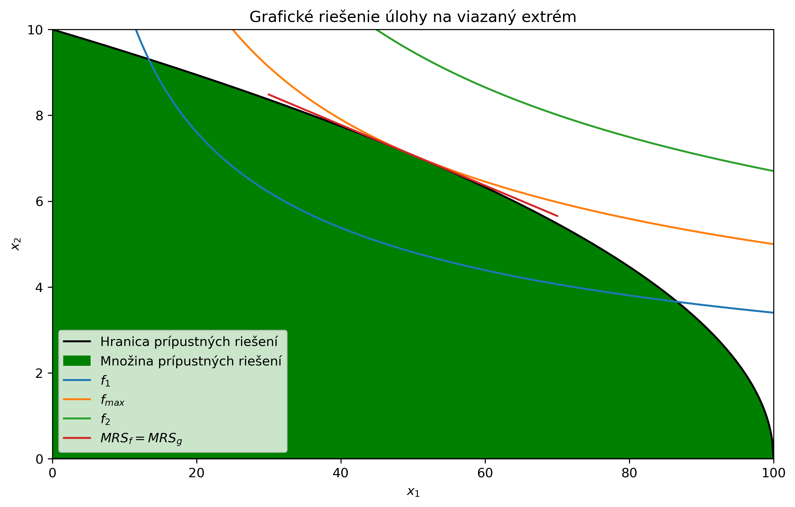
Obr. 1.14 Grafické riešenie úlohy na viazaný extrém#
1.8.5. Podmienky prvého rádu#
Optimálny bod musí spĺňať dve podmienky:
leží na hranici prípustných riešení,
vrstevnica účelovej funkcie sa dotýka hranice prípustných riešení, preto majú obe krivky rovnaký sklon
Tieto dve rovnice nazývame podmienky prvého rádu (nutné podienky) úlohy na viazaný extrém.
Ekonomická interpretácia je prirodzená. V optimálnom bode sa hraničná miera substitúcie účelovej funkcie rovná hraničnej miere substitúcie vyplývajúcej z ohraničenia.
Z geometrického znázornenia vyplýva, že optimálny bod je jednoznačný. Podmienky prvého rádu preto v tomto prípade postačujú na určenie riešenia.
Technická poznámka
Podmienky prvého rádu úlohy na viazaný extrém možno odvodiť aj pomocou Lagrangeovej funkcie
Skonštruovaním Lagrangeovej funkcie sme úlohu na viazaný extrém previedli na úlohu na voľný extrém. Namiesto maximalizácie funkcie \(f(x_1,x_2)\) pri ohraničení \(g(x_1,x_2)=0\) maximalizujeme Lagrangeovu funkciu výberom hodnôt \(\{x_1,x_2,\lambda\}\).
Pri hľadaní optima požadujeme, aby prvé parciálne derivácie Lagrangeovej funkcie boli nulové:
a zároveň musí platiť ohraničenie
Z prvých dvoch rovníc vyplýva
Po úprave dostaneme
čo je rovnosť hraničných mier substitúcie funkcií \(f(x_1,x_2)\) a \(g(x_1,x_2)\).
Lagrangeova metóda preto vedie k rovnakým podmienkam prvého rádu, aké sme odvodili pomocou geometrickej interpretácie viazaného extrému.
Všimnite si
Úlohu na viazaný extrém možno formulovať aj opačne.
Namiesto maximalizácie funkcie
pri ohraničení
môžeme minimalizovať funkciu
pri ohraničení
kde \(c\) je požadovaná hodnota účelovej funkcie.
Geometrická interpretácia zostáva rovnaká. Optimálne riešenie vzniká v bode dotyku vrstevnice funkcie \(f(x_1,x_2)\) a hranice prípustných riešení určenej funkciou \(g(x_1,x_2)\).
V optimálnom bode preto opäť platí rovnosť sklonov a hraničných mier substitúcie oboch funkcií.
Ekonomické modely možno preto často interpretovať dvojako. Napríklad spotrebiteľ môže maximalizovať užitočnosť pri danom rozpočte alebo minimalizovať výdavky pri požadovanej úrovni užitočnosti. Obe formulácie vedú k rovnakému optimálnemu riešeniu.
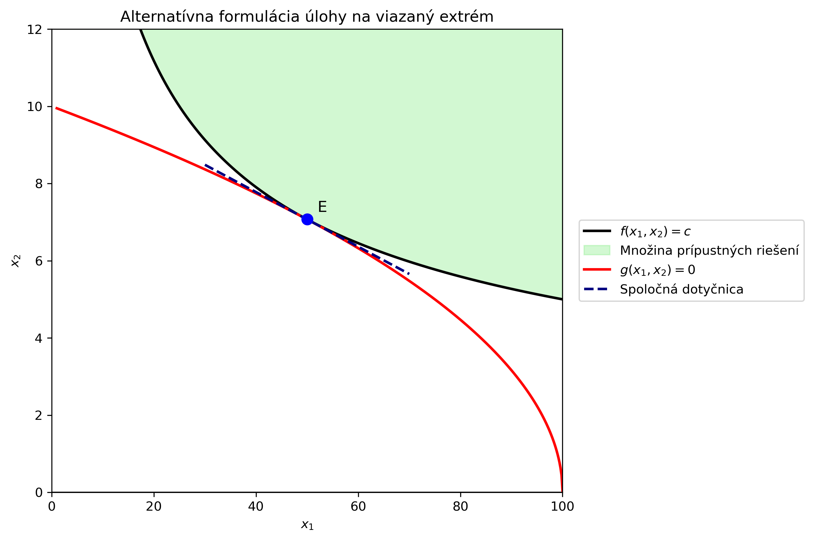
Obr. 1.15 Grafické riešenie úlohy na viazaný extrém#
1.8.6. Podmienky prvého rádu vo všeobecnom prípade#
Uvažujme úlohu na viazaný extrém
vzhľadom na ohraničenie
kde
je vektor rozhodovacích premenných.
Podmienky prvého rádu
Optimálny bod musí ležať na hranici prípustných riešení. Preto platí
V optimálnom bode sa zároveň rovnajú hraničné miery substitúcie účelovej a ohraničujúcej funkcie. Pre ľubovoľnú dvojicu rozhodovacích premenných \(x_i\) a \(x_j\) preto platí
Podmienky prvého rádu úlohy na viazaný extrém sú teda:
a
V optimálnom bode sa preto musia rovnať hraničné miery substitúcie účelovej funkcie a funkcie v ohraničení pre všetky relevantné dvojice rozhodovacích premenných.
Technická poznámka
Pri úlohe s \(n\) rozhodovacími premennými existuje veľké množstvo dvojíc premenných. V praxi sa podmienky prvého rádu zvyčajne zapisujú pomocou Lagrangeovej funkcie, ktorá poskytuje kompaktnejší zápis.
1.9. Matematický model v ekonomickej analýze#
Ekonomický model je zjednodušený opis ekonomickej reality. Pomocou matematických funkcií a rovníc vyjadruje vzťahy medzi ekonomickými veličinami.
Cieľom ekonomického modelu je vysvetliť správanie ekonomických subjektov, predpovedať dôsledky ekonomických rozhodnutí a analyzovať vplyv hospodárskej politiky.
1.9.1. Racionálne správanie#
Ekonomické modely často vychádzajú z predpokladu racionálneho správania.
- Racionálne správanie
Ekonomický subjekt si z množiny dostupných možností vyberá riešenie, ktoré najlepšie spĺňa jeho cieľ.
Spotrebiteľ napríklad maximalizuje užitočnosť, firma maximalizuje zisk a investor maximalizuje výnos investície.
Matematické programovanie umožňuje takéto rozhodovanie formalizovať ako úlohu matematického programovania, v ktorej sa maximalizuje alebo minimalizuje účelová funkcia pri daných ohraničeniach.
1.9.2. Exogénne a endogénne premenné#
Ekonomické modely zvyčajne obsahujú exogénne a endogénne premenné.
- Exogénna premenná
Premenná, ktorej hodnota je určená mimo modelu.
- Endogénna premenná
Premenná, ktorej hodnota vzniká riešením modelu.
V modeli správania spotrebiteľa môžu byť exogénnymi premennými napríklad príjem spotrebiteľa a ceny statkov. Optimálna spotreba jednotlivých statkov je endogénnou premennou modelu.
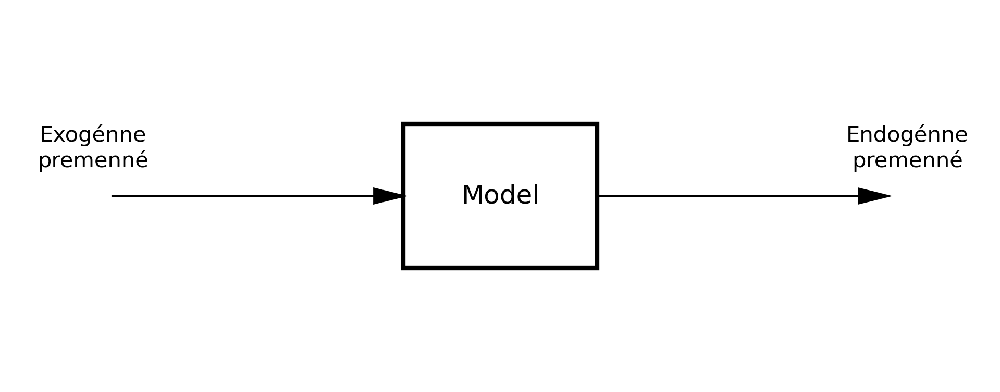
Obr. 1.16 Grafické riešenie úlohy na viazaný extrém#
1.9.3. Redukovaný tvar modelu#
Označme vektor exogénnych premenných symbolom \(\mathbf{x}\) a vektor endogénnych premenných symbolom \(\mathbf{y}\).
Ekonomický model možno chápať ako zobrazenie exogénnych premenných na endogénne premenné
- Redukovaný tvar modelu
Zápis modelu, v ktorom sú všetky endogénne premenné vyjadrené výlučne pomocou exogénnych premenných a parametrov modelu.
Redukovaný tvar preto opisuje, ako sa hodnoty endogénnych premenných menia v dôsledku zmien exogénnych premenných.
V modeli správania spotrebiteľa (Príklad: Správanie spotrebiteľa vo všeobecnom tvare) sú exogénnymi premennými ceny statkov, príjem spotrebiteľa a parametre funkcie užitočnosti. Endogénnymi premennými sú spotreby jednotlivých statkov.
Pre funkciu užitočnosti
sú exogénnymi premennými
a endogénnymi premennými
Riešením optimalizačnej úlohy získame redukovaný tvar modelu
Tieto rovnice tvoria redukovaný tvar modelu. Optimálna spotreba je v nich vyjadrená pomocou príjmu, cien a parametrov preferencií.
1.9.4. Komparatívna statika#
Komparatívna statika skúma vlastnosti redukovaného tvaru
Zaujíma nás najmä vplyv exogénnych premenných na endogénne premenné. Tento vplyv meriame pomocou multiplikátorov
a elasticít
Multiplikátory redukovaného tvaru merajú absolútnu zmenu endogénnej premennej spôsobenú zmenou exogénnej premennej.
Elasticity redukovaného tvaru merajú relatívnu, teda percentuálnu zmenu endogénnej premennej spôsobenú percentuálnou zmenou exogénnej premennej.
Multiplikátory a elasticity patria medzi najdôležitejšie nástroje ekonomickej analýzy, pretože umožňujú interpretovať výsledky ekonomických modelov.
Komparatívna statika správania spotrebiteľa je vyjadrená v Príklad: Komparatívna statika modelu správania spotrebiteľa.
1.10. Dominancia a efektívnosť#
V predchádzajúcich častiach sme uvažovali rozhodovacie problémy s jedinou účelovou funkciou. V mnohých ekonomických situáciách však rozhodujeme podľa viacerých kritérií súčasne.
Pri kúpe produktu môže spotrebiteľ zohľadňovať cenu, kvalitu, spoľahlivosť a prevádzkové náklady. Firma môže súčasne sledovať zisk, trhový podiel a riziko podnikania.
Takéto problémy nazývame úlohy viackriteriálneho rozhodovania.
- Dominancia
Riešenie A dominuje riešeniu B, ak je aspoň také dobré vo všetkých kritériách a lepšie aspoň v jednom kritériu.
Ak riešenie dominuje inému riešeniu, racionálny rozhodovateľ nemá dôvod voliť dominované riešenie.
- Efektívne riešenie
Riešenie, ktoré nie je dominované žiadnym iným prípustným riešením.
Množinu všetkých efektívnych riešení nazývame efektívna hranica.
Koncept efektívnosti patrí medzi základné nástroje ekonomickej analýzy. Neskôr sa s ním stretneme napríklad pri Paretovej efektívnosti (Paretova efektívnosť), rozhodovaní spotrebiteľa a analýze finančných portfólií. Firma vyrába na svojej efektívnej hranici, ktorú nazývame Hranica výrobných možností.
Na {numref}’efektivna_hranica’ sú zobrazené štyri investičné projekty hodnotené podľa dvoch kritérií:
výnos (vyšší výnos je preferovaný),
riziko (nižšie riziko je preferované).
Projekt C dominuje projektom A a B, pretože dosahuje rovnaký alebo vyšší výnos pri nižšom riziku. Projekty A a B sú preto dominované riešenia.
Projekty C a D nie sú dominované žiadnym iným projektom. Tvoria množinu efektívnych riešení. Medzi týmito projektmi nemožno zvýšiť výnos bez súčasného zvýšenia rizika alebo znížiť riziko bez súčasného zníženia výnosu.
Spojnica efektívnych riešení sa nazýva efektívna hranica. Predstavuje množinu najlepších dostupných kompromisov medzi výnosom a rizikom.
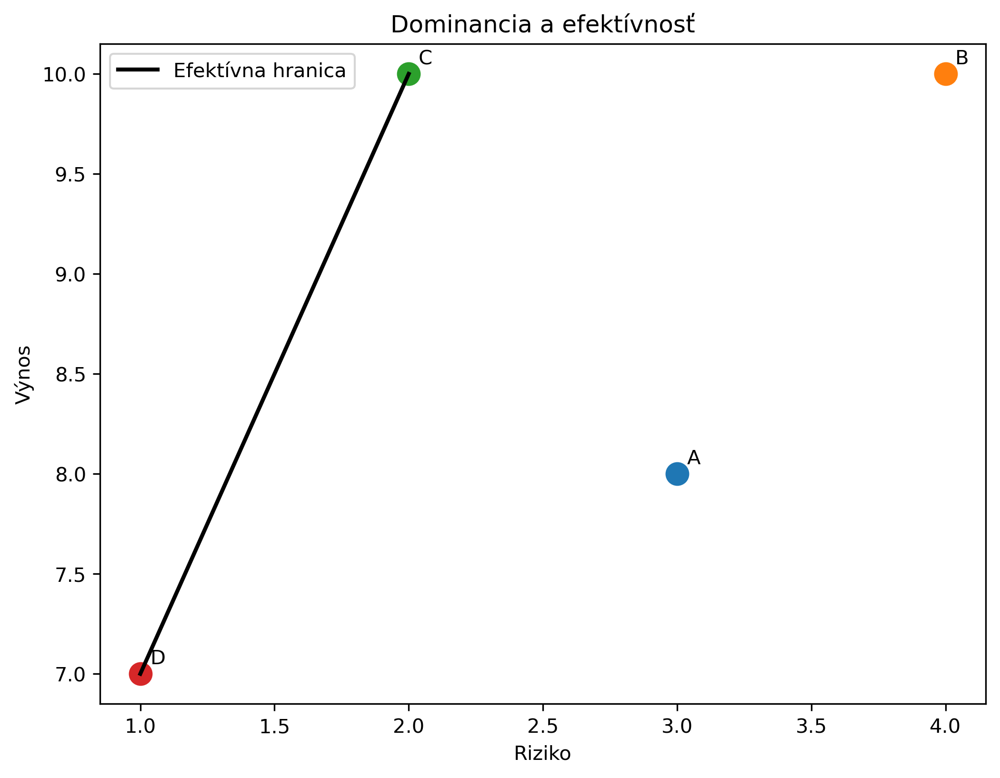
Obr. 1.17 Dominancia a efektívnosť#
Všimnite si
Riešením úlohy na voľný alebo viazaný extrém je optimálne riešenie. Hľadáme najvyššiu alebo najnižšiu hodnotu jednej účelovej funkcie.
Riešením úlohy viackriteriálneho rozhodovania je efektívne riešenie. Hľadáme riešenie, ktoré nie je dominované žiadnym iným prípustným riešením.
1.11. Python v ekonomickej analýze#
Moderná ekonomická analýza sa vo veľkej miere opiera o výpočtový softvér. V tejto učebnici budeme používať programovací jazyk Python.
Pri riešení ekonomických modelov budeme využívať najmä knižnice:
SymPy na symbolické výpočty,
NumPy na numerické výpočty,
SciPy na riešenie zložitejších numerických úloh,
Matplotlib na tvorbu grafov.
Všimnite si
Väčšinu analytických úloh v tejto učebnici budeme riešiť symbolicky pomocou knižnice SymPy. Počítač za nás vykoná algebraické úpravy, derivovanie a riešenie sústav rovníc. Našou úlohou bude predovšetkým správne formulovať ekonomický model a interpretovať výsledky.
Najčastejšie budeme používať príkazy:
symbols()na vytvorenie symbolických premenných,diff()na výpočet derivácií,simplify()na algebraické úpravy výrazov,solve()na riešenie rovníc a sústav rovníc.
Napríklad
from sympy import symbols, diff
x = symbols('x')
f = x**2
diff(f, x)
Vráti
2*x
a predstavuje prvú deriváciu funkcie
Použitie matematických symbolov je užitočné najmä pri odvodení redukovaného tvaru ekonomických modelov, výpočtov multiplikátorov a elasticít alebo pri riešení optimalizačných úloh.
Numerické riešenia
Nie všetky ekonomické modely majú analytické riešenie. V takých prípadoch budeme využívať numerické metódy.
Najčastejšie použijeme funkciu fsolve() z knižnice SciPy, ktorá dokáže nájsť riešenie sústavy nelineárnych rovníc.
1.12. Riešené príklady#
1.12.1. Príklad: Vlastnosti funkcií podľa ich prvých derivácií#
Grafy na Obr. 1.1, Obr. 1.2, Obr. 1.3, Obr. 1.5 Obr. 1.5 a Obr. 1.7 zobrazujú priebeh funkcií
Vyjadrite prvé derivácie a zodpovedajúce charakteristiky funkcií.
Riešenie
Prvé derivácie funkcií sú:
Funkcia \(f(x)\) je lineárna, pretože jej prvá derivácia
je konštantná. Multiplikátor je rovnaký vo všetkých bodoch funkcie a nezávisí od hodnoty \(x\).
Ostatné funkcie sú nelineárne. Ich multiplikátor závisí od hodnoty premennej \(x\).
Keďže platí
funkcia \(f(x)\) je rastúca v celom definičnom obore.
Na defeničnom obore funcke \(g(x)\), \(x \ge 0:\)
Funkcia \(g(x)\) je vo svojom definičnom obore \(x \ge 0\) klesajúca.
Stacionárny bod funkcie \(h(x)\) je
Stacionárny bod je [0,0].
Ak \(x \ge 0\), funkcia \(h(x)\) je rastúca. Ak \(x \le 0\), funkcia \(h(x)\) je klesajúca.
Funkcia \(i(x)\) je rastúca, ak \(x>0\).
Pre funkciu
platí
Stacionárne body
Po vyjmutí \(x\) dostaneme
pre
a
Z druhého vzťahu vyplýva
Zodpovedajúce funkčné body sú
a
Monotónnosť funkcie určíme podľa znamienka prvej derivácie.
Pre
platí
preto je funkcia klesajúca.
Pre
platí
preto je funkcia rastúca.
Pre
platí
preto je funkcia opäť klesajúca.
Funkcia \(j(x)\) je teda
klesajúca na intervale \(\left(-\infty,0\right\rangle\),
rastúca na intervale \(\left\langle 0,\frac{40}{3}\right\rangle\),
klesajúca na intervale \(\left\langle\frac{40}{3},\infty\right)\).
Funkcia nie je monotónna v celom definičnom obore.
1.12.2. Príklad: Vlastnosti funkcií podľa ich druhých derivácií#
Vyjadrite druhé derivácie a zodpovedajúce charakteristiky funkcií z Príklad: Vlastnosti funkcií podľa ich prvých derivácií.
Druhé derivácie:
Funkcia \(f(x)\) je lineárna.
Funkcia \(g(x)\) je konkávna v celom svojom definičnom obore.
Stacionárny bod [0,0] je lokálne maximum.
Funkcia \(h(x)\) je konkávna v celom svojom definičnom obodre
Stacionárny bod [0,0] je lokálne minimum.
Funkcia \(i(x)\) je definovaná pre \(x \ge 0\). V definičnom obore
a teda \(i(x)\) je konkávna.
Inflexný bod získame riešením rovnice
Inflexný bod je
Inflexný bod je \([20/3,8000/9]\).
Pre
platí:
Naopak, pre
platí:
Ak \(x \le 20/3\) , funkcia \(j(x)\) je konvexná. Ak \(x \ge 20/3\) , funkcia \(j(x)\) je konkávna.
1.12.3. Príklad: Úloha na voľný extrém kvadratickej funkcie.#
Riešme úlohu
Prvá derivácia je
Podmienka prvého rádu
je splnená pre
Druhá derivácia je
Bod \([0,25]\) je preto lokálnym maximom funkcie a zároveň jej globálnym maximom.
1.12.4. Príklad: Úloha na voľný extrém kubickej funkcie.#
Riešme úlohu
V Príklad: Vlastnosti funkcií podľa ich prvých derivácií sme ukázali, že funkcia má dva stacionárne body:
a
Zároveň platí
Pre bod \(x=0\) dostaneme
preto je bod \([0,0]\) lokálnym minimom.
Pre bod \(x=\frac{40}{3}\) dostaneme
preto je bod
lokálnym maximom.
Overme, či ide aj o globálne maximum. Platí
a
Funkčné hodnoty sú preto pre dostatočne malé hodnoty \(x\) vyššie než
Lokálne maximum teda nerieši úlohu
Funkcia nemá globálne maximum ani globálne minimum.
1.12.5. Príklad: Vrstevnice#
Na obrázkoch Obr. 1.10 a Obr. 1.11 sú zobrazené vrstevnice funkcií
Odvoďte matematický tvar ich vrstevníc a vyjadrite hraničné sklony vrstevníc a hraničné miery substitúcie.
Riešenie
Vrstevnice získame tak, že funkčnú hodnotu označíme konštantou \(c\).
Pre lineárnu funkciu
platí
Po vyjadrení premennej \(x_2\) dostaneme
Ide o lineárne vrstevnice.
Z ich matematického tvaru vyplýva
Hraničný sklon každej vrstevnice je konštantný a nezávisí od polohy na vrstevnici.
Hraničná miera substitúcie je záporná hodnota sklonu vrstevnice:
Zvýšenie \(x_1\) o jednotku preto vyžaduje zníženie \(x_2\) o 0,5 jednotky, aby funkčná hodnota zostala nezmenená.
Pre funkciu
platí
Po umocnení na tretiu dostaneme
Po vyjadrení premennej \(x_2\)
Ide o nelineárne vrstevnice.
Hraničný sklon vrstevnice získame derivovaním podľa \(x_1\)
Sklon závisí od polohy bodu na vrstevnici.
Pri raste \(x_1\) je absolútna hodnota sklonu menšia. Vrstevnica sa postupne splošťuje.
Hraničná miera substitúcie je
Hraničná miera substitúcie sa mení spolu s polohou na vrstevnici.
Pre funkciu
platí
Po vyjadrení premennej \(x_2\)
Aj v tomto prípade ide o nelineárne vrstevnice.
Hraničný sklon vrstevnice je
S rastom \(x_1\) rastie absolútna hodnota sklonu. Vrstevnica sa stáva strmšou.
Hraničná miera substitúcie je
Hraničná miera substitúcie preto rastie s hodnotou \(x_1\).
Hraničnú mieru substitúcie možno vyjadriť aj ako pomer parciálnych derivácií funkcie:
Keďže
a
platí
Dostali sme rovnaký výsledok ako pri výpočte hraničnej miery substitúcie zo sklonu vrstevnice.
Vo všetkých troch prípadoch platí, že hraničná miera substitúcie je zápornou hodnotou sklonu vrstevnice:
Hraničná miera substitúcie vyjadruje, o koľko sa musí zmeniť premenná \(x_2\), aby kompenzovala jednotkovú zmenu premennej \(x_1\) a funkčná hodnota zostala nezmenená (ceteris paribus).
Pri lineárnej funkcii je hraničná miera substitúcie konštantná. Pri nelineárnych funkciách závisí od polohy bodu na vrstevnici, ako je znázornené dotyčnicami na Obr. 1.11.
1.12.6. Príklad: Správanie spotrebiteľa#
Spotrebiteľ maximalizuje funkciu užitočnosti, ktorá vyjadruje jeho spokojnosť so spotrebou dvoch statkov označených symbolmi \(x_1\) a \(x_2\).
Nech spotrebiteľov rozpočet je 300 €, cena prvého statku 5 € a druhého 10 €. Rozpočet spotrebiteľa možno zapísať ohraničením
Vypočítajte optimálnu spotrebu oboch statkov.
Riešenie
Spotrebiteľove správanie možno formulovať úlohou na viazaný extrém
vzhľadom na
Hraničná miera substitúcie funkcie užitočnosti je
Hraničná miera substitúcie rozpočtového ohraničenia je
Podmienky prvého rádu
a
Keďže spotrebiteľ maximalizuje užitočnosť a viac spotreby zvyšuje jeho blahobyt, optimálne riešenie musí ležať na hranici rozpočtového ohraničenia.
a teda
Kombináciou oboch rovníc získame
Platí tiež
Optimálny spotrebiteľský kôš je
Maximálna užitočnosť je
Spotrebiteľ maximalizuje svoju užitočnosť spotrebou 20 jednotiek prvého statku a 20 jednotiek druhého statku. V tomto bode sa hraničná miera substitúcie spotrebiteľa rovná pomeru cien oboch statkov.
1.12.7. Príklad: Správanie spotrebiteľa vo všeobecnom tvare#
Uvažujme spotrebiteľa s funkciou užitočnosti
kde
Spotrebiteľ disponuje rozpočtom \(M\) a ceny statkov sú \(p_1\) a \(p_2\).
Jeho správanie možno formulovať úlohou
vzhľadom na rozpočtové ohraničenie
Riešenie
Hraničná miera substitúcie funkcie užitočnosti je
Hraničná miera substitúcie rozpočtového obmedzenia je
Podmienky prvého rádu sú
a
Po dosadení dostaneme
Po úprave
Optimálny bod zároveň leží na hranici rozpočtového ohraničenia
Dosadením za \(x_2\) získame
Po úprave
Odtiaľ
Podobne
Dostali sme riešenie optimalizačnej úlohy vo forme
Premenné \(M\), \(p_1\), \(p_2\), \(\alpha\) a \(\beta\) považujeme za exogénne premenné modelu. Ich hodnoty sú určené mimo modelu.
Premenné \(x_1\) a \(x_2\) sú endogénne premenné modelu. Ich hodnoty vznikajú riešením optimalizačnej úlohy.
Vzťahy
nazývame redukovaný tvar modelu, pretože vyjadrujú endogénne premenné výlučne pomocou exogénnych premenných a parametrov modelu.
1.12.8. Príklad: Komparatívna statika modelu správania spotrebiteľa#
V predchádzajúcom príklade sme odvodili redukovaný tvar modelu správania spotrebiteľa
Vyjadrite multiplikátory a elasticity spotreby vzhľadom na príjem spotrebiteľa a ceny statkov.
Riešenie
Príjmový multiplikátor spotreby prvého statku je
Príjmový multiplikátor spotreby druhého statku je
Obidva multiplikátory sú kladné. Rast príjmu preto zvyšuje spotrebu oboch statkov.
Cenový multiplikátor spotreby prvého statku je
Cenový multiplikátor spotreby druhého statku je
Obidva multiplikátory sú záporné. Rast ceny statku preto znižuje jeho spotrebu.
Príjmová elasticita spotreby prvého statku je
Po dosadení
Analogicky
Spotreba oboch statkov je teda jednotkovo elastická vzhľadom na príjem.
Cenová elasticita spotreby po prvom statku je
Po dosadení dostaneme
Podobne
Dopyt po oboch statkoch je preto jednotkovo elastický vzhľadom na vlastnú cenu.
Výsledky komparatívnej statiky ukazujú, že:
zvýšenie príjmu o 1 % zvýši spotrebu oboch statkov o 1 %,
zvýšenie ceny statku o 1 % zníži jeho spotrebu o 1 %.
Výsledky boli získané priamo z redukovaného tvaru modelu. To je typický postup komparatívnej statiky v ekonomickej analýze.
1.12.9. Príklad: Python a práca s matematickými symbolmi#
V príklade Príklad: Vlastnosti funkcií podľa ich prvých derivácií sme analyzovali vlastnosti funkcií
Prvé a druhé derivácie, stacionárne body a inflexný bod možno vyjadriť matematickými symbolmi pomocou knižnice SymPy.
Riešenie
Najskôr deklarujme premennú symbolom a definujme funkciu:
from sympy import symbols, diff, solve, sqrt
x = symbols('x')
f = 50*x
g = 25 - x**2
h = x**2
i = sqrt(x)
j = 30*x**2 - 1.5*x**3
Prvé derivácie vyjadríme príkazom diff():
f1 = diff(f, x)
g1 = diff(g, x)
h1 = diff(h, x)
i1 = diff(i, x)
j1 = diff(j, x)
print(f1)
print(g1)
print(h1)
print(i1)
print(j1)
Výsledok:
50
-2*x
2*x
1/(2*sqrt(x))
-4.5*x**2 + 60*x
Druhé derivácie získam**op*tovným derivovaním:
f2 = diff(f1, x)
g2 = diff(g1, x)
h2 = diff(h1, x)
i2 = diff(i1, x)
j2 = diff(j1, x)
print(f2)
print(g2)
print(h2)
print(i2)
print(j2)
výsledok:
0
-2
2
-1/(4*x**(3/2))
60 - 9.0*x
Stacionárne body funkcie \(j(x)\) získame riešením rovnice
V jazyku Python:
stacionarne_body = solve(j1,x)
print(stacionarne_body)
Výsledok:
[0.0, 13.3333333333333]
Funkčné hodnoty v stacionárnych bodoch:
for xs in stacionarne_body:
print(xs,j.subs(x, xs))
Výsledok:
0.0 0
13.3333333333333 1777.77777777778
Funkcia má preto stacionárne body
a
Inflexný bod získame riešením rovnice
V jazyku Python:
inflexny_bod = solve(j2, x)
print(inflexny_bod)
Výsledok:
[6.66666666666667]
Funkčná hodnota v inflexnom bode je:
xi = inflexny_bod[0]
print(j.subs(x, xi))
Výsledok:
888.888888888889
Inflexný bod funkcie \(j(x)\) je
Všimnite si
Pri jednoduchých funkciách je vhodné vedieť určiť derivácie ručne. Pri zložitejších ekonomických modeloch však väčšinu algebraických úprav, derivácií a riešení sústav rovníc vykonáva počítač.
Pomocou funkcií diff() a solve() môžeme automatizovať veľkú časť výpočtov. Pozornosť tak môžeme venovať formulácii ekonomického modelu a ekonomickej interpretácii výsledkov.
1.12.10. Príklad: Riešenie modelu správania spotrebiteľa použitím knižnice SymPy#
Využijeme knižnicu SymPy v Pythone na riešenie Príklad: Správanie spotrebiteľa vo všeobecnom tvare.
Spotrebiteľ maximalizuje funkciu užitočnosti
pri rozpočtovom obmedzení
Pomocou knižnice SymPy odvoďte redukovaný tvar modelu a určte príjmové a cenové elasticity spotreby.
Riešenie
Najskôr načítame potrebné nástroje a definujeme symbolické premenné:
from sympy import symbols, diff, solve, simplify
x1, x2 = symbols('x1 x2', positive=True)
p1, p2 = symbols('p1 p2', positive=True)
M = symbols('M', positive=True)
alpha, beta = symbols('alpha beta', positive=True)
Hraničná miera substitúcie funkcie užitočnosti je
V Pythone:
u = x1**alpha * x2**beta
MU1 = diff(u, x1)
MU2 = diff(u, x2)
MRS_u = simplify(MU1 / MU2)
MRS_u
Výsledok:
alpha*x2/(beta*x1)
Hraničná miera substitúcie rozpočtového obmedzenia je
Podmienky prvého rádu sú:
podmienka1 = MRS_u - p1/p2
podmienka2 = p1*x1 + p2*x2 - M
Sústavu dvoch rovníc vyriešime pomocou funkcie solve():
riesenie = solve(
[podmienka1, podmienka2],
[x1, x2],
dict=True
)
riesenie = riesenie[0] if type(riesenie) is list else riesenie
riesenie
Výsledok:
{x1: alpha*M/(p1*(alpha + beta)),
x2: beta*M/(p2*(alpha + beta))}
Redukovaný tvar modelu je preto
Príjmovú elasticitu spotreby prvého statku vypočítame zo vzťahu
V Pythone:
x1_rf = riesenie[x1]
eps_x1_M = simplify(
diff(x1_rf, M) * M / x1_rf
)
eps_x1_M
Výsledok:
1
Analogicky:
x2_rf = riesenie[x2]
eps_x2_M = simplify(
diff(x2_rf, M) * M / x2_rf
)
eps_x2_M
Výsledok:
1
Príjmové elasticity spotreby oboch statkov sú jednotkové.
Vlastnú cenovú elasticitu spotreby prvého statku vypočítame:
eps_x1_p1 = simplify(
diff(x1_rf, p1) * p1 / x1_rf
)
eps_x1_p1
Výsledok:
-1
A podobne:
eps_x2_p2 = simplify(
diff(x2_rf, p2) * p2 / x2_rf
)
eps_x2_p2
Výsledok:
-1
Vlastné cenové elasticity oboch statkov sú jednotkovo elastické.
Výsledky komparatívnej statiky možno zhrnúť:
Všimnite si
Funkcie diff(), solve() a simplify() umožňujú symbolicky odvodiť redukovaný tvar modelu aj jeho multiplikátory a elasticity. Pri zložitejších ekonomických modeloch tak môžeme sústrediť pozornosť na ekonomickú interpretáciu výsledkov namiesto zdĺhavých algebraických úprav.
Upozornenie
Funkcia solve() môže vracať výsledky v rôznych formátoch. Pri riešení sústavy rovníc často vracia zoznam slovníkov. Ak nás zaujíma jediné riešenie, je praktické previesť výsledok priamo na slovník:
riesenie = solve(
[rovnica1, rovnica2],
[x1, x2],
dict=True
)
riesenie = riesenie[0] if type(riesenie) is list else riesenie
Potom môžeme jednotlivé riešenia jednoducho vyberať pomocou symbolov:
riesenie[x1]
riesenie[x2]
Bez tejto úpravy by bolo potrebné najprv pristupovať k prvému prvku zoznamu:
riesenie[0][x1]
Pri práci so zložitejšími ekonomickými modelmi býva prevod riešenia na slovník pohodlnejší a zvyšuje prehľadnosť programu.
1.12.11. Príklad: Výstup solve vždy dictionary#
Výsledok funkcie solve() závisí od typu riešenej úlohy.
Uvažujme sústavu rovníc
from sympy import symbols, solve
x1, x2 = symbols('x1 x2')
riesenie = solve(
[x1 + x2 - 3,
x1 - x2 - 1],
[x1, x2],
dict=True
)
print(riesenie)
print(type(riesenie))
Výsledok:
[{x1: 2, x2: 1}]
<class 'list'>
Funkcia solve() v tomto prípade vrátila zoznam obsahujúci jeden slovník.
Pre pohodlnejšiu prácu môžeme výsledok previesť na samotný slovník:
riesenie = riesenie[0] if type(riesenie) is list else riesenie
print(riesenie)
print(type(riesenie))
Výsledok:
{x1: 2, x2: 1}
<class 'dict'>
Potom môžeme pristupovať k jednotlivým riešeniam priamo:
riesenie[x1]
riesenie[x2]
Výsledok:
2
1
Pri ekonomických modeloch býva takýto zápis prehľadnejší než používanie indexov typu
riesenie[0][x1]
1.13. Neriešené príklady#
Odporúčanie
Pri riešení úloh sa pokúste najskôr odvodiť výsledok analyticky. Následne môžete svoje riešenie overiť pomocou Pythonu.
V ekonomickej analýze je dôležité nielen získať správny výsledok, ale aj porozumieť postupu, ktorý k nemu vedie.
1.13.1. Príklad#
Pre funkciu
vyjadrite a vypočítajte:
prvú deriváciu,
druhú deriváciu,
stacionárne body,
inflexný bod,
intervaly rastu a poklesu funkcie,
intervaly konvexnosti a konkávnosti funkcie.
Interpretujte ekonomický význam prvej a druhej derivácie.
1.13.2. Príklad#
Pre funkciu
vyjadrite a vypočítajte:
prvú deriváciu,
druhú deriváciu,
stacionárne body,
inflexný bod,
intervaly rastu a poklesu funkcie,
intervaly konvexnosti a konkávnosti funkcie.
Na základe výsledkov načrtnite graf funkcie.
1.13.3. Príklad#
Pre funkciu
vyjadrite a vypočítajte:
prvú deriváciu,
druhú deriváciu,
elasticitu funkcie vzhľadom na premennú (x),
intervaly rastu a poklesu funkcie,
intervaly konvexnosti a konkávnosti funkcie.
Interpretujte ekonomický význam elasticity a druhej derivácie.
1.13.4. Príklad#
Pre funkciu
vyjadrite a vypočítajte:
prvú deriváciu,
druhú deriváciu,
elasticitu funkcie vzhľadom na premennú (x),
stacionárne body,
intervaly rastu a poklesu funkcie,
intervaly konvexnosti a konkávnosti funkcie.
Pre ktoré hodnoty premennej (x) je elasticita:
menšia ako jedna,
rovná jednej,
väčšia ako jedna?
Interpretujte ekonomický význam výsledkov.
1.13.5. Príklad#
Pre funkciu
vyjadrite a vypočítajte:
prvú deriváciu,
druhú deriváciu,
elasticitu funkcie vzhľadom na premennú (x),
podmienky, za ktorých je funkcia rastúca,
podmienky, za ktorých je funkcia konkávna,
podmienky, za ktorých je funkcia konvexná.
Interpretujte ekonomický význam parametra \((\alpha)\).
1.13.6. Príklad#
Pre funkciu
vyjadrite a vypočítajte:
prvú deriváciu,
druhú deriváciu,
stacionárne body,
inflexný bod,
intervaly rastu a poklesu funkcie,
intervaly konvexnosti a konkávnosti funkcie,
lokálne extrémy.
Vyjadrite tiež minimum a maximum funkcie na intervale
Na základe výsledkov načrtnite graf funkcie.
1.13.7. Príklad#
Výrobu firmy \(Q\) možno opísať funkciou v tvare
kde \(L\) je množstvo využitej práce. Cena produkcie je 5 € za jednotku a mzda je 30 € za jednotku práce.
Vypočítajte množstvo práce, ktoré maximalizuje zisk podniku.
1.13.8. Príklad#
Spotrebiteľ maximalizuje funkciu užitočnosti
pri rozpočtovom obmedzení
vyjadrite a vypočítajte:
podmienky prvého rádu,
redukovaný tvar modelu,
príjmové multiplikátory spotreby,
cenové multiplikátory spotreby,
príjmové elasticity spotreby,
cenové elasticity spotreby.
Interpretujte ekonomický význam získaných výsledkov.
1.13.9. Príklad#
Spotrebiteľ maximalizuje funkciu užitočnosti
pri rozpočtovom obmedzení
vyjadrite a vypočítajte:
podmienky prvého rádu,
redukovaný tvar modelu,
príjmové multiplikátory spotreby,
cenové multiplikátory spotreby,
príjmové elasticity spotreby,
cenové elasticity spotreby.
Interpretujte ekonomický význam získaných výsledkov.
1.13.10. Príklad#
Spotrebiteľ maximalizuje funkciu užitočnosti
pri rozpočtovom obmedzení
vyjadrite a vypočítajte:
podmienky prvého rádu,
redukovaný tvar modelu,
príjmové multiplikátory spotreby,
cenové multiplikátory spotreby,
príjmové elasticity spotreby,
cenové elasticity spotreby.
Interpretujte ekonomický význam parametra (\alpha) a získaných výsledkov.
1.13.11. Príklad#
Pri kúpe notebooku spotrebiteľ zohľadňuje cenu a výkon.
Alternatíva |
Cena (€) |
Výkon |
|---|---|---|
A |
800 |
75 |
B |
900 |
90 |
C |
800 |
95 |
D |
1000 |
100 |
Nižšia cena je preferovaná a vyšší výkon je preferovaný.
Nájdite:
dominované riešenia,
efektívne riešenia.
Zdôvodnite svoje závery.
1.13.12. Príklad#
Podnik porovnáva štyri investičné projekty.
Projekt |
Výnos |
Riziko |
|---|---|---|
A |
8 |
3 |
B |
10 |
4 |
C |
10 |
2 |
D |
7 |
1 |
Vyšší výnos je preferovaný a nižšie riziko je preferované.
Nájdite:
dominované riešenia,
efektívne riešenia.
Zdôvodnite svoje závery.